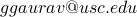
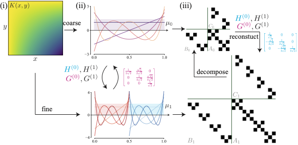
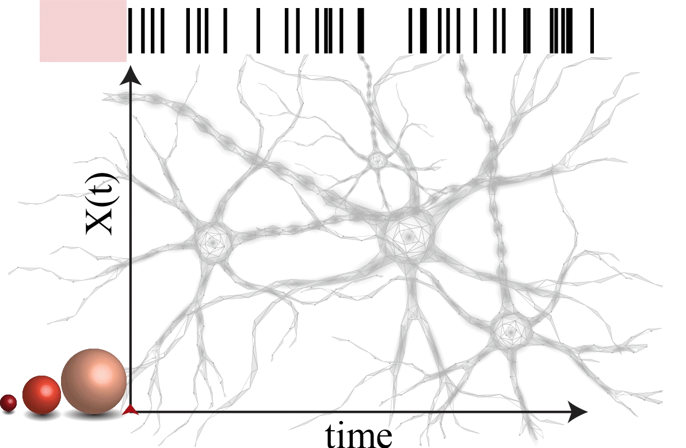

Gaurav Gupta
 |
PhD Candidate Contactemail:  |
Research Interests
sequence models, learning partial differential equations
Applications of Information theory in machine learning and inference
Fractional dynamics and long-range memory
Modeling and Analysis of physiological signals (e.g. EEG, neuron spike events)
Recent
See our Multiwavelets-based approach to efficiently learn the Operator maps
|  | Gaurav Gupta, Xiongye Xiao, and Paul Bogdan |
Check out our novel ‘‘particles’’ approach to extract the network topological information from a single node
|  | Gaurav Gupta, Justin Rhodes, Roozbeh Kiani, and Paul Bogdan |
Publications
Journals
Gaurav Gupta, Meghana Kshirsagar, Ming Zhong, Shahrzad Gholami, and Juan Lavista Ferres
Comparing Recurrent Convolutional Neural Networks for large scale Bird species classification [link] [code]
Nature Scientific Reports 11, (2021)
Mohamed Ridha Znaidi*, Gaurav Gupta*, Kamiar Asgari, and Paul Bogdan
Identifying Arguments of Space-Time Fractional Diffusion: Data-driven Approach [link] [code]
Frontiers in Applied Mathematics and Statistics, May 2020
(* equal contribution authors)
Gaurav Gupta, Sergio Pequito, and Paul Bogdan
Approximate submodular functions and performance guarantees [arXiv]
under review Journal of Machine Learning Research (JMLR)
Valeriu Balaban, Sean Lim, Gaurav Gupta, James Boedicker, and Paul Bogdan
Quantifying emergence and self-organisation of Enterobacter cloacae microbial communities [link]
Nature Scientific reports 8, 2018
Gaurav Gupta and A.K. Chaturvedi
User Selection in MIMO Interfering Broadcast Channels [link] [arXiv] [code]
IEEE transactions on Communications, vol. 62, no. 5, pp. 1568-1576, Apr. 2014
Gaurav Gupta and A.K. Chaturvedi
Conditional Entropy based User Selection for Multiuser MIMO systems [link] [arXiv] [code]
IEEE Communications Letters, vol. 17, no. 8, pp. 1628-1631, Aug. 2013
Conference
Gaurav Gupta, Xiongye Xiao, Radu Balan, and Paul Bogdan
Non-Linear Operator Approximations for Initial Value Problems
In ICLR: 10th International Conference on Learning Representations, April 2022.
Gaurav Gupta, Xiongye Xiao, and Paul Bogdan
Multiwavelet-based Operator Learning for Differential Equations [arXiv] [code]
In NeurIPS: Proceedings of the 34th Neural Information Processing Systems Conference, December 2021. Spotlight
Gaurav Gupta, Chenzhong Yin, Jyotirmoy Deshmukh, and Paul Bogdan
Non-Markovian Reinforcement Learning using Fractional Dynamics [arXiv]
In the Proceedings of IEEE Conference on Decision and Control (CDC) 2021
Chenzhong Yin, Gaurav Gupta, and Paul Bogdan
Discovering laws from the Observations: A Data-driven Approach
Dynamic Data Driven Applications Systems (DDDAS) 2020
Gaurav Gupta, Anit Kumar Sahu, and Wan-Yi Lin
Noisy Batch Active Learning with Deterministic Annealing [arXiv] [code]
Gaurav Gupta, Sergio Pequito and Paul Bogdan
Learning latent Fractional dynamics with Unknown Unknowns [link] [arXiv] [code]
Proceedings of the 2019 American Control Conference
Ruochen Yang*, Gaurav Gupta* and Paul Bogdan
Data-driven Perception of Neuron Point Process with Unknown Unknowns [link] [arXiv] [code]
Proceedings of the 10th ACM/IEEE International Conference on Cyber-Physical Systems
(ICCPS), Cyber-Physical Systems Week, Montreal, Quebec, Canada — April 16 - 18, 2019
(* equal contribution authors)
Gaurav Gupta, Sergio Pequito and Paul Bogdan
Re-thinking EEG-based non-invasive brain interfaces: modeling and analysis [link] [arXiv]
Proceedings of the 2018 ACM/IEEE International Conference on Cyber-Physical Systems
(ICCPS), Cyber-Physical Systems Week, Porto, Portugal, April 2018
Gaurav Gupta, Sergio Pequito and Paul Bogdan
Dealing with unknown unknowns: Identification and selection of minimal sensing
for fractional dynamics with unknown inputs [link] [arXiv] [code]
Proceedings of the 2018 American Control Conference, Milwaukee, USA, June 27-29, 2018
Gaurav Gupta and Paul Bogdan
Distributed Placement of Power Generation Resources in Uncertain Environments [link] [code]
Proceedings of the 2017 ACM/IEEE International Conference on Cyber-Physical Systems
(ICCPS), Cyber-Physical Systems Week, Pittsburgh, USA, pp. 71-79, April 2017
Gaurav Gupta and A.K. Chaturvedi
User Selection in MIMO Interfering Broadcast Channels (Invited paper)[talk]
SPCOM-2014
Patents
Gaurav Gupta, Anit Kumar Sahu, Wan-Yi Lin, and Joseph Szurley
Training a Machine Learning Model Using a Batch Based Active Learning Approach
U.S. Patent
Kapil Gulati, Gaurav Gupta, Shailesh Patil and Marco Papaleo
Congestion Control for LTE-V2V, U.S. Patent Application No. 15/585,782, May 3 2017
Kapil Gulati, Gaurav Gupta, Shailesh Patil and Marco Papaleo
Congestion Control for LTE-V2V, U.S. Patent Application No. 15/585,635, May 3 2017
Kapil Gulati, Gaurav Gupta, Shailesh Patil, Durga Prasad Malladi, Sudhir Kumar Baghel and Marco Papaleo
Multi-Technology Coexistence in the unlicensed intelligent transportation service spectrum,
U.S. Patent Application No. 15/644,378, July 7 2017
Shailesh Patil, Kapil Gulati and Gaurav Gupta
Detection of Technologies for Coexistence, U.S. Patent Application No. 15/617,765, June 8 2017
Kapil Gulati, Shailesh Patil, Gaurav Gupta, Sudhir Kumar Baghel and Marco Papaleo
DSRC-LTE V2V Co-Channel Long Term Coexistence, U.S. Patent Application No. 15/465,877, Mar 22 2017
Technical Reports
Gaurav Gupta and S.A. Jafar
Topological Interference Management and frequency hopping [pdf]
Gaurav Gupta and S.A. Jafar
Degrees of freedom in rank deficient channels [pdf]
Gaurav Gupta and A.K. Chaturvedi
Low complexity user/antenna selection in MU-MIMO channels [pdf]
Gaurav Gupta, Shiv Prakash and A.R. Harish
RFID Assets Tracking System [pdf]
Gaurav Gupta and Mayank Bhardwaj
Interference Alignment Schemes for MIMO Channels [pdf]